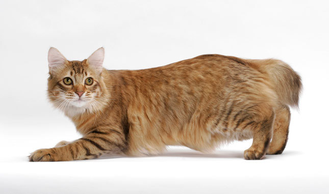
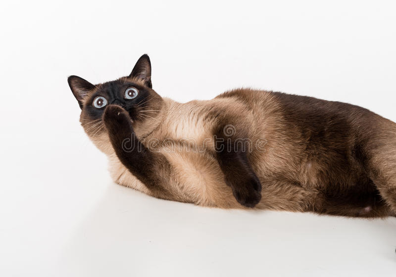
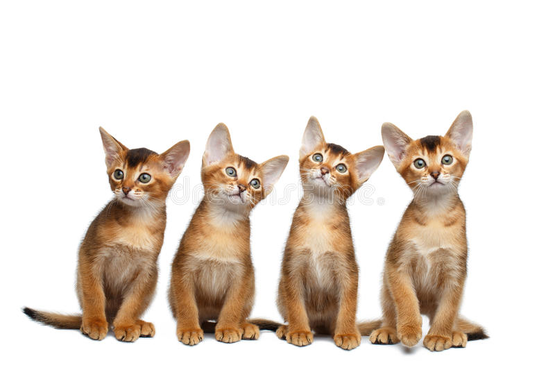
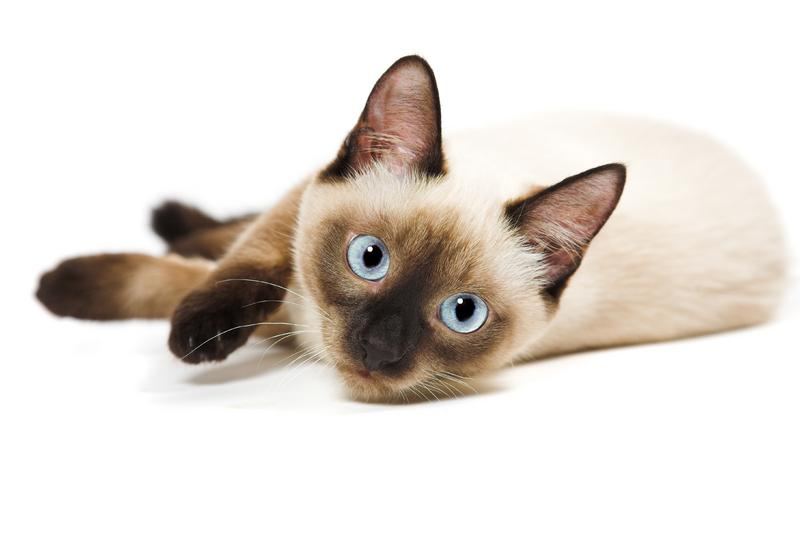
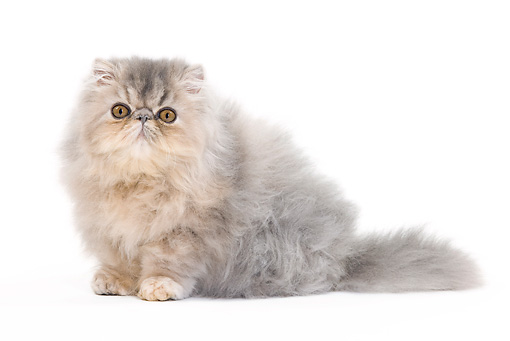
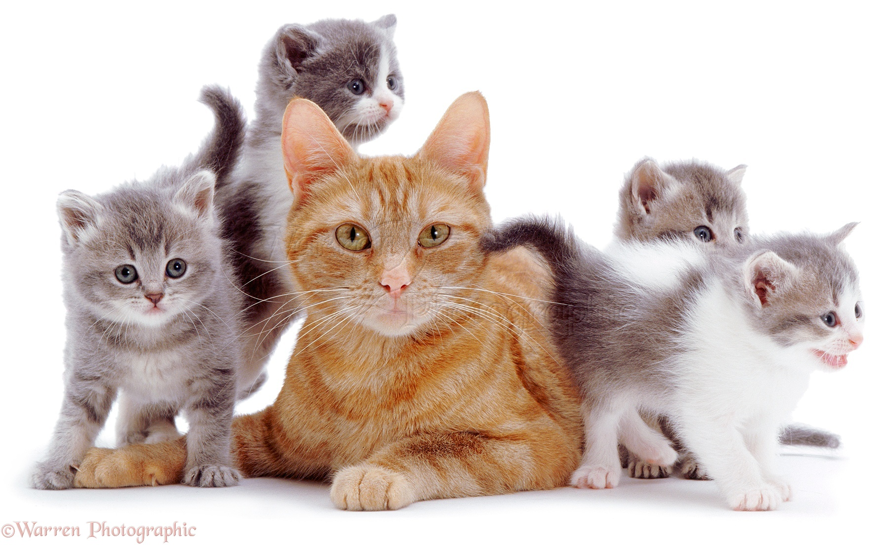

Find yourself a lifelong companion
American Bobtail
Fun loving and frisky, the American Bobtail may not be as rambunctious as the Abyssinian cat but are nevertheless plenty entertaining. These cats and wonderful for families, they are people oriented and very intelligent.

Siamese
Siamese cats are highly highly social and as such, incredibly dependent on their owners. They are also highly vocal animals and will make their displeasure or lonliness known via their high pitched "yowl". These cats are perfect companians for those looking to cultivate a close and dependent friendship with their pet.

Abyssinian
These cats are not what you want if you're looking for decorative or calm pets! They are rambunctious, independent and filled with energy - you can expect to find them making your entire neighborhood their home.

Balinese
Balinese cats are extremely social and emotionally attuned to the needs of their owners. They are agile leapers and love to be held and petted - this reputation of high maintenance is what makes the Balinese cat not for everyone. They are also far more vocal than other cats and are not afraid to make their needs known.

Persian
If you want a calm, sweet cat with a quiet disposition this is the cat for you! Persian cats are highly intelligent and very low energy, although they enjoy affection and gently playing. These cats are also strictly indoor cats and are good for families with elderly people or young children.

American Shorthair
American Shorthair cats are a very happy medium in the world of cats. They get along very well with children and other animals and are very easily trained. These cats are also a healthy, hardy breed - they have roots in farming England and enjoy a relatively large gene pool. You can expect these cats to be a part of your family for a long time! .
